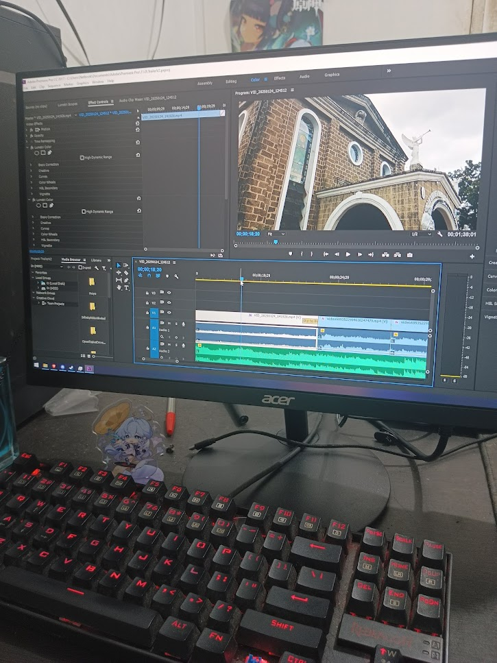
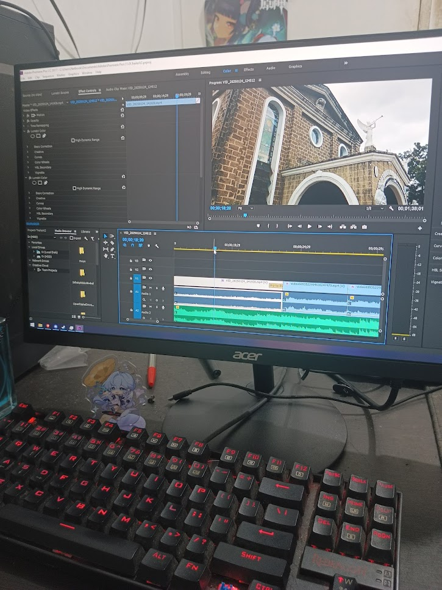

Welcome To Auto Biography
of
Jan Franciz E Cabug-os
About Me
 I was born on January 1 2005 in Cainta, Rizal, Philippines. I Grew up in a Caring and loving Family where elderly must be respected.
My Parents, Maria Fe Cabug-os Who mostly the one who Took Care of me with my Journey in the Earth and the one who showed me the value of my Life,
Marlon Artieda The one that married my mother that is the one who is working for the family, I am the Eldest and I have 3 Siblings Which are all Girls Their Name is Czarina, Scarlet and Lindsey.
I was born on January 1 2005 in Cainta, Rizal, Philippines. I Grew up in a Caring and loving Family where elderly must be respected.
My Parents, Maria Fe Cabug-os Who mostly the one who Took Care of me with my Journey in the Earth and the one who showed me the value of my Life,
Marlon Artieda The one that married my mother that is the one who is working for the family, I am the Eldest and I have 3 Siblings Which are all Girls Their Name is Czarina, Scarlet and Lindsey.
When i was a Child i was exposed to technology at an age of 6 and got me curious in Coding/Developing stuff because of my Mother's Brother who is
an Software Developer, I got inspired by the work he was doing and was interested and doing it my self, then i was also exposed to Computer Gaming Became my hobby in life until now.

School Life
I Began my Education on San Juan Elementary School, Where i Learn the Basics and Develop my self to Read and write and countings, I haven't got any
achivements in Elementary School and i Stopped a year on the 5th Grade Because of me not Waking up for school. I was Often Bullied by my Classmates
which led to me not being confident enough to make alot of friends and gain Trust Issues.
I Continued my Education on Francisco P. Felix Memorial National High School, Where i was able to learn more about the world and how it works in depth, I also made Quite a few friends along the way,
which i still have Contact with and still Spend time together up until now, I did not Join a single Clubs and did not have any Achievements in my High School Life, I Stopped 3 Years in 9th Grade Because of my Mental Health and Depression.
Currently i am a Cainta Senior High school Student Enrolled/Studying in Computer Programming, I am Currently Learning the Basics of Programming and Web Development Which is trying to show the potential of creativity in me.
I Choose this Strand because of my Interest in Technology and Programming, I also want to make my self prepaired for my future strand that i already chosen since i was a kid, I haven't adjust yet with the new environment and the new people around me,
and specially with my Time management skills.
 

Intrest and Hobbies
I have a Passion for Technology and Programming, I am also Interested in Computer Gaming, Video Editing, Riding a Bicycle, Watching anime, movies and also Reading Manga,
I also like to listen to Music specially Japanese Music and Still being curious on trying out new things like Playing Piano and Guitar, I am Also Intrested in Astronimy and Looking at the Stars at Night,
Because of my Passion and Intrest I am Moving forward to Reach my Goals and Dreams in Life.

Values and Beliefs
I Believe that " Everyone has a Purpose in Life, and that we should always be grateful for what we have" , I also believe that" we should always strive to be the best version of ourselves and to never give up on our dreams" ,
I value Honesty, Respect, Kindness and Empathy, I also believe in the importance of Family and Friends, and that we should always cherish the moments we have with them.


Goals and Dreams
After Senior High School, I plan to Take a Bachelor of Computer Science in College Because it will help me in Complex and Logical Skill that will be used in Developing a Game in the future,
With this Goal i will be able to Reach my dreams on Becoming a Game Developer that not only Entertain People but also Enjoy the Game that i want to make,
I also Want to Travel to Japan and Experience the Culture and Technology that they have and I want to Visit the Places that i always see in Anime and Manga,
I see the Future where Technology and Humanity will be in Harmony and not for the Destruction of Humanity.